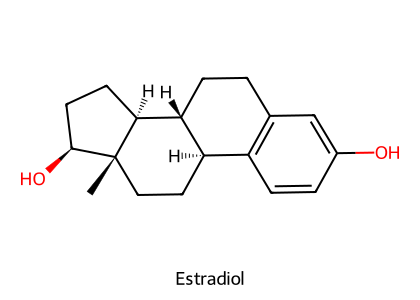
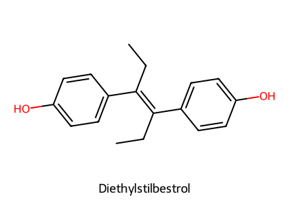
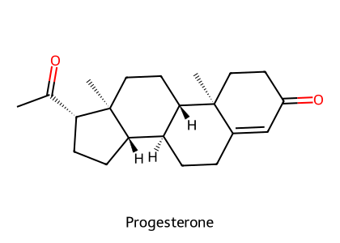
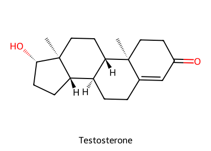
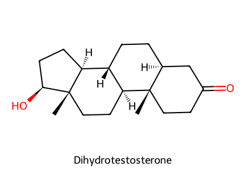
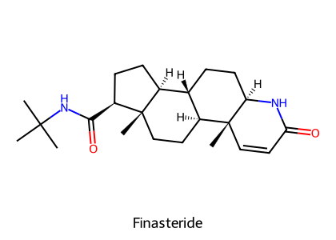
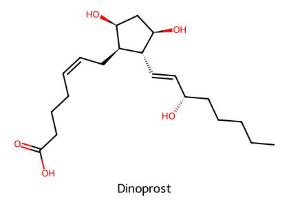

重點摘要
生殖藥理的核心是黃體（CL）：progesterone 由黃體分泌、維持懷孕；PGF2α 溶解黃體（子宮產生的黃體溶解素），prolactin 在犬貓支持黃體。所以「要終止懷孕或縮短週期」就是想辦法讓黃體消失（PGF2α、D2 促效劑）或擋住 progesterone（mifepristone）；「要延後或同步發情」就是補 progestin 延長黃體期，停藥後一起發情。GnRH 類似物則有兩面性：脈衝式給予會刺激（誘發排卵），持續給予反而讓受體去敏感（化學去勢）。
- Estrogen 在犬貓的特有毒性是骨髓抑制（再生不良性貧血、白血球減少）；所以犬的誤配處理改用 PGF2α 或 D2 促效劑。
- DES 現在唯一的用途：極低劑量治療母犬貓 estrogen 反應性的尿道括約肌失禁（2025 期末考題）；但失禁的首選是 α 促效劑 phenylpropanolamine。
- Altrenogest：口服合成 progestin，母馬發情同期化（連續餵 15 天，停藥後 4–5 天發情；2025 期末考題），也用於豬與維持母馬妊娠。
- Progestin 副作用：子宮內膜增生、子宮蓄膿；類糖皮質素作用 → 誘發糖尿病、長期使用停藥後醫源性腎上腺功能低下。
- PGF2α（dinoprost）造成黃體溶解、流產、分娩；類似物 cloprostenol、fenprostalene（劑量只要 dinoprost 的 1–5%）。Leuprolide 是 GnRH 類似物，不是前列腺素（2025 期末考第 43 題）。PGF2α 不可 IV，主要 IM；母豬黃體溶解不穩定，不用於同期化。
- Deslorelin 植入劑：持續釋放 → GnRH 受體去敏感與下調 → 可逆性的公犬、雪貂不孕；初期會先短暫刺激 testosterone。
- hCG 主要為 LH 作用，eCG（PMSG）主要為 FSH 作用；醣類比例越高半衰期越長（LH 0.5 h → eCG 24 h）。重複跨物種給予可能過敏性休克。
- Finasteride 抑制 5α-reductase（減少 DHT）→ 治犬良性攝護腺肥大（2025 期末考題），但昂貴、療程長，首選仍是去勢；有致畸胎性。
本頁藥物總覽
劑量與途徑取自講義與 HBK Ch.12；生殖藥物多為大動物製劑，使用前需確認各國核准與休藥期。
| 藥物 | 類別／機轉 | 途徑與參考劑量 | 主要用途 |
|---|---|---|---|
| Estradiol cypionate／benzoate | 天然 estrogen 酯 | Cypionate：油劑 IM；Benzoate：牛耳植入劑（常與 progesterone 或雄性素合併） | 誘發發情、同化（生長促進） |
| Estriol | 弱 estrogen | PO | 結紮母犬尿失禁；該劑量不造成再生不良性貧血 |
| Diethylstilbestrol（DES） | 非類固醇合成 estrogen | PO（極低劑量） | 母犬貓括約肌失禁（唯一用途） |
| Zeranol | 黴菌毒素類 estrogen | 耳植入劑（牛、羊） | 生長促進；HBK：休藥期牛 65 天、羊 40 天 |
| Altrenogest（Regu-Mate®） | 口服合成 progestin | PO 母馬 0.044 mg/kg q24h × 15 天（HBK）；豬 14 天（休藥 21 天） | 母馬發情同期化、維持妊娠 |
| Melengestrol acetate | Progestin | 飼料添加（牛） | 抑制發情、同期化、生長促進 |
| Megestrol acetate | Progestin | PO；母犬避孕 2.2 mg/kg/day × 32 天（從乏情期開始，HBK）；犬 t½ 8 天 | 避孕、行為問題、人的食慾促進 |
| Medroxyprogesterone acetate | Progestin 水性懸浮液 | IM／SC；貓作用至少 30 天 | 長效避孕、行為問題（最後手段） |
| Progesterone | 天然 progestin | 植入劑（口服迅速被肝臟代謝失活） | 牛生長促進、同期化 |
| Testosterone esters | 雄性素 | IM（油劑或懸浮液，作用 2–4 週）；植入劑 | 性慾、去勢公犬尿失禁、試情牛 |
| Stanozolol、Boldenone、Trenbolone | 同化雄性類固醇 | Stanozolol PO 或 IM；Boldenone IM 每 3 週；Trenbolone 耳植入 | 生長、貧血、惡病質；boldenone：衰弱馬 |
| Danazol | 雄性素受體部分促效劑 | PO 5 mg/kg q12h（HBK） | 犬 ITP、IMHA 的類固醇輔助 |
| Finasteride | 5α-reductase 抑制（抗雄性素） | PO 0.1–0.5 mg/kg q24h（HBK） | 犬良性攝護腺肥大 |
| Gonadorelin | 合成 GnRH（十胜肽） | IM 100–200 μg／牛（同期化方案） | 牛卵巢濾泡囊腫、排卵誘發、同期化 |
| Deslorelin | 長效 GnRH 類似物 | SC 植入劑；馬亦有注射劑 | 母馬 48 h 內排卵；公犬、雪貂可逆性不孕 |
| Leuprolide acetate | GnRH 部分促效劑，長效懸浮 | IM（稀釋後）；雪貂 100 μg 每月、鸚鵡 375 μg 每月（HBK） | 雪貂腎上腺疾病、玄鳳鸚鵡過度產蛋 |
| hCG | 主要 LH 作用 | 注射 | 排卵誘發、犬隱睪 |
| eCG（PMSG）、FSH | 主要 FSH 作用 | 注射 | 誘發發情、超級排卵（胚胎移植） |
| Dinoprost（PGF2α，Lutalyse®） | FP 受體 → 黃體溶解＋子宮收縮 | IM（不可 IV）；牛同期化 25 mg IM | 流產、分娩誘發、子宮蓄膿、同期化 |
| Cloprostenol、Fenprostalene | PGF2α 合成類似物 | IM；劑量為 dinoprost 的 1–5% | 同上；牛黃體囊腫、木乃伊胎 |
| Bromocriptine、Cabergoline | D2 促效 → prolactin↓ | PO | 犬終止妊娠、假懷孕、誘發發情 |
| Mifepristone（RU-486） | PR 拮抗（部分促效） | IM（講義） | 犬墮胎 |
| Misoprostol | PGE1 類似物（EP3） | PO | NSAID 潰瘍預防；也用於墮胎與子宮蓄膿 |
| Phenylpropanolamine（PPA） | α 促效劑 → 尿道括約肌收縮 | PO | 犬貓尿失禁首選 |
動情週期與激素調控
| 介入點 | 藥物 | 效果 |
|---|---|---|
| 下視丘／腦下垂體 | GnRH（脈衝）／GnRH 類似物（持續） | 刺激排卵／去敏感化抑制 |
| 卵巢 | hCG（LH 樣）、eCG（FSH 樣） | 排卵／卵泡發育、超級排卵 |
| 黃體期延長 | Progestins（altrenogest、melengestrol） | 抑制發情，停藥後同步發情 |
| 黃體期縮短 | PGF2α 與類似物；犬貓再加 D2 促效劑 | 黃體溶解 → 提早發情或終止妊娠 |
| Progesterone 受體 | Mifepristone | 阻斷 progesterone → 流產 |
講義：犬不論是否懷孕，黃體都會持續（與其他物種不同），而且黃體是懷孕期間 progesterone 的唯一來源，在分娩前才退化。這解釋了犬的假懷孕，也解釋了為什麼抑制 prolactin（犬貓的黃體支持因子）就能終止犬的妊娠。
性類固醇的藥動學與皮質類固醇相似：大部分與血漿蛋白結合（sex steroid-binding globulin 與白蛋白），合成藥物口服吸收佳，天然 progesterone 口服會被肝臟迅速代謝（見 類固醇藥理）。
Estrogens


結構式依 PubChem 資料以 RDKit 自繪。
來源與種類
- 類固醇 estrogen（動物來源）、非類固醇 estrogen（合成）、酚類植物 estrogen。
- 天然 estrogen 由卵巢、胎盤、腎上腺皮質與睪丸（尤其種公馬）分泌。Estradiol（E2）最強；estrone（E1）與 estriol（E3）由肝臟從 E2 轉成，或在周邊組織由 androstenedione 等雄性素轉成。
- Aromatase（CYP19A1）：把雄性素轉成 estrogen；主要在卵巢、胎盤，也大量存在於脂肪、骨骼、血管與腦。
- 酯化改變藥動學、延長作用：benzoate 做成牛的耳植入劑（緩慢吸收），cypionate 做成油劑 IM。Estradiol 經肝臟 phase II（葡萄糖醛酸、硫酸）結合，經尿、膽汁、糞便排出。
作用與用途
| 用途 | 說明 | 更好的選擇 |
|---|---|---|
| 結紮後的問題 | 尿失禁、陰道炎、皮膚炎 | 尿失禁首選 phenylpropanolamine（α 促效劑使尿道括約肌收縮） |
| 誘發發情 | 乏情動物 | — |
| 拮抗雄性素 | 犬攝護腺肥大或腫瘤 | Finasteride（抗雄性素） |
| 牛持續性黃體 | 偶爾有效 | — |
| 增加子宮收縮 | 子宮蓄膿、木乃伊胎 | PGF2α |
| 放鬆子宮頸 | 誘發分娩 | — |
| 犬誤配（早期流產） | 減少著床、干擾輸卵管運輸 | PGF2α 與 D2 促效劑（estrogen 有骨髓毒性） |
| 同化作用 | Estradiol benzoate＋progesterone、＋testosterone propionate、estradiol＋trenbolone acetate 植入劑 | — |
合成 estrogen
- DES：1938–1971 年用於孕婦預防流產，結果子宮內暴露的女兒約 0.1% 在 15 歲後發生陰道腺癌；過去也做牲畜生長促進劑。現在人和牲畜都不再使用，唯一用途是極低劑量治療母犬貓 estrogen 反應性括約肌失禁。肝代謝、腎排除。
- Dienestrol、Hexestrol：非類固醇 estrogen；人長期使用外源 estrogen 增加停經後子宮內膜癌風險；製劑為陰道乳膏。
- Zeranol：黴菌毒素（mycoestrogen），牛羊耳植入的生長促進劑。
- 骨髓抑制：犬貓特有的毒性 → 再生不良性貧血、白血球減少。（Estriol 在治療尿失禁的劑量下不會造成。）
- 流產；高濃度造成胎兒泌尿生殖道畸形 → 懷孕禁用。
- 卵泡囊腫；骨折（骨化過度）。
- HBK 另列：陰道與直腸脫垂、子宮蓄膿。
- Estriol 在成年結紮母犬的副作用：食慾差、嘔吐、多渴。
HBK Ch.12 的 estrogen 用途清單與講義幾乎一致，並補充 tamoxifen（estrogen 受體拮抗劑）可用於犬乳腺腫瘤，PO 10–20 mg q12h，副作用為子宮蓄膿、噁心、嘔吐（考古題：tamoxifen 可口服，「只能注射」是錯的）。
Progestins重要

- Estrogen 預處理後增加生殖道腺體生長
- 延長黃體期、抑制發情
- 使子宮肌對 oxytocin 去敏感（減少 oxytocin 受體表現）→ 懷孕期間防止子宮收縮
- 同化作用（食慾增加、活動減少）
結構式依 PubChem 資料以 RDKit 自繪。Progesterone 由黃體與胎盤分泌；progestins = progesterone＋合成類似物（medroxyprogesterone、megestrol、melengestrol、altrenogest）。
發情同期化的原理
| 藥物 | 途徑 | 用途（講義） | 教科書補充（HBK） |
|---|---|---|---|
| Altrenogest | PO | FDA 核准控制母馬發情週期（同期化）：餵 15 天 → 停藥後 4–5 天發情 → 停藥後 9–11 天排卵；豬同期化（肌肉、肝臟殘留容許量 <1、<4 ppb）；維持母馬妊娠 | 母馬 0.044 mg/kg q24h × 15 天；豬 14 天，停藥後 4–9 天發情，休藥期 21 天 |
| Melengestrol acetate | 飼料添加 | 牛生長促進；抑制發情，停止添加後數天發情 | 14 天，停藥後 2–6 天發情；休藥至少 48 h |
| Megestrol acetate | PO（每日） | 人與母犬避孕；人的食慾促進；行為問題 | 母犬 2.2 mg/kg/day × 32 天（從乏情期開始）；犬 t½ 8 天 |
| Medroxyprogesterone acetate | IM／SC | 大劑量 IM 長效避孕；行為問題 | 貓作用至少 30 天 |
| Progesterone | 植入劑 | 牛生長促進（加 estradiol benzoate）；著床失敗與習慣性流產 | HBK：治療著床失敗與習慣性流產效果有限 |
MPA 與 megestrol 有抗雄性素作用，降低促性腺激素與性類固醇，可控制犬貓攻擊行為，但只能在其他行為治療失敗後作為最後手段——因為副作用如下。
- 子宮內膜增生、子宮內膜炎、子宮蓄膿。
- 類糖皮質素作用：原本血糖控制邊緣的動物可能發展成糖尿病（HBK 題庫：megestrol 不是雄性素、不會造成再生不良性貧血，但可能造成糖尿病）。
- 負回饋抑制 ACTH → 長期使用後停藥造成醫源性腎上腺功能低下。
荷爾蒙避孕
- 口服：estrogen／progestin 合併，或連續單用 progestin。
- 植入：norgestrel 皮下植入；medroxyprogesterone 大劑量 IM 長效。
- 機轉：抑制腦下垂體功能 → 抑制排卵。
Androgens、同化類固醇與抗雄性素



結構式依 PubChem 資料以 RDKit 自繪。比較 testosterone 與 DHT 的 A 環，就能看出 5α-reductase 做了什麼，以及 finasteride 為什麼長得像類固醇。
作用
- 雄性化：附屬性器官（副睪、輸精管、攝護腺、儲精囊）與第二性徵；與 FSH 共同促進精子生成；適當劑量增加性慾。
- 同化：蛋白質合成增加。
- 促進 erythropoietin 分泌 → 可治療貧血。
- 高劑量抑制促性腺激素分泌。
| 藥物 | 途徑 | 用途 |
|---|---|---|
| Testosterone | 注射（IM 酯類）、植入劑 | 性無能與不孕（效果不一）；去勢公犬的尿失禁與皮膚炎；把淘汰母牛、小母牛、閹牛做成試情牛（偵測發情） |
| Stanozolol | PO 或 IM | 提升表現的藥物、雄性作用弱；人與動物皆核准；增重、貧血、惡病質 |
| Boldenone undecylenate | IM（HBK：每 3 週） | FDA 核准用於衰弱的馬 |
| Trenbolone | 耳植入（加 estradiol） | 牛生長促進 |
| Danazol | PO 5 mg/kg q12h（HBK） | 雄性素受體部分促效；抑制腦下垂體-性腺軸、抑制性類固醇合成；弱雄性（同化）＋抗 estrogen。犬 ITP 與 IMHA 對糖皮質素反應不佳時的輔助藥 |
| Finasteride | PO 0.1–0.5 mg/kg q24h（HBK） | 抑制 testosterone 轉成 5α-DHT（活性 2 倍）→ 犬良性攝護腺肥大；昂貴、療程長，首選是去勢；致畸胎 |
不孕、精子過少、肝毒性；母畜與雌性胎兒雄性化；長期使用 → 肛周腺瘤、攝護腺疾病、行為改變（HBK 另列會陰疝氣）。
Estrogens：estradiol 酯、zeranol 植入（合併 progesterone、testosterone propionate 或 trenbolone acetate）；Progestins：progesterone 植入、melengestrol 飼料添加；Androgens：testosterone propionate 植入、合成同化類固醇（stanozolol、boldenone、trenbolone）。
GnRH 與類似物
GnRH：pGlu-His-Trp-Ser-Tyr-Gly-Leu-Arg-Pro-Gly-NH₂（十胜肽）。第 6 位的 Gly 換成 D-胺基酸、C 端改成乙醯胺，就成為不易被分解的長效類似物。
FSH、LH 釋放 → 排卵誘發、治療牛卵巢濾泡囊腫、同期化、不孕、隱睪。
GnRH 受體去敏感與下調 → 促性腺激素與性類固醇下降 → 化學去勢。初期會先短暫刺激（testosterone 先升後降）。
| 藥物 | 結構 | 用途與用法（講義） |
|---|---|---|
| Gonadorelin | 合成 GnRH（十胜肽）；[6-D-Phe] 版本把第 6 位 Gly 換成 Phe | 無月經、性腺功能低下、不孕；刺激牛豬生殖；美國核准用於泌乳乳牛同期化（搭配 PGF2α） |
| Deslorelin | [6-D-Trp, 9-(N-ethyl-prolinamide), 10-deglycinamide] GnRH | 週期中的母馬 48 h 內誘發排卵；SC 植入劑 → 公犬、雪貂可逆性不孕（手術去勢不可逆） |
| Leuprolide acetate | H-Pyr-His-Trp-Ser-Tyr-D-Leu-Leu-Arg-Pro-NHEt；GnRH 部分促效劑 | 長效懸浮液，使用前以生理食鹽水稀釋（避免肌肉壞死、劑量更準）；人：攝護腺癌、子宮內膜異位、子宮肌瘤；玄鳳鸚鵡過度產蛋；雪貂腎上腺疾病（腎上腺過度產生性類固醇，可與 mitotane 併用） |
乳牛定時人工授精同期化方案（講義）
VPT10 Ch.27 稱此為「Ovsynch」方案。馬的 LH 高峰較長（24–36 h），單劑 gonadorelin 不足以可靠誘發排卵，所以馬多用長效 deslorelin。VPT10 同樣說明持續暴露於 gonadorelin 或 deslorelin 會使 GnRH 受體去敏感與下調，「先刺激、後長期抑制」。HBK 列出 leuprolide 用於雪貂為稀釋懸浮液 100 μg IM 每月一次、鸚鵡 375 μg IM 每月一次，懷孕動物不應使用。
促性腺激素 Gonadotropins
| LH | FSH | hCG | eCG（PMSG） | |
|---|---|---|---|---|
| 來源 | 腦下垂體 | 腦下垂體 | 人胎盤（孕婦尿液） | 馬胎盤（懷孕母馬血清） |
| 主要作用 | LH | FSH | 主要 LH 樣 | 主要 FSH 樣 |
| 半衰期 | ~0.5 h | ~1 h | ~8 h | ~24 h |
| 醣類比例 | 13–16% | 13–16% | 31% | 47% |
醣類越多，越不容易被分解，半衰期越長。醣蛋白激素比一般胜肽激素（t½ 5–20 分鐘）耐分解得多。HBK：所有促性腺激素受體都偶聯 Gs → cAMP → PKA。
- 牛 FSH：誘發排卵、採卵、超級排卵產生多個胚胎（胚胎移植：選高遺傳價值的供體，把胚胎移給受體）。
- 雄性：不孕、犬隱睪（LH 增加 testosterone 讓睪丸下降，HBK）。
- 雌性：誘發發情、卵泡發育與排卵。
重複跨物種給予促性腺激素（例如人的 hCG、馬的 eCG 用在其他動物）可能引起過敏性休克。
PGF2α 與類似物必考

非靈長類動物由子宮產生的黃體溶解激素；週期中的動物在黃體期末釋放、懷孕動物在接近分娩時釋放。
藥理作用：強力血管收縮 → 黃體血流下降 → 黃體溶解、progesterone 合成下降；子宮平滑肌收縮（早期流產、分娩誘發）；在母馬有強力催產作用。
結構式依 PubChem 資料以 RDKit 自繪。
| 物種 | 用途（講義） |
|---|---|
| 人 | 第二孕期終止妊娠、產後出血 |
| 母犬 | 早期流產、分娩誘發；子宮感染與子宮蓄膿 |
| 牛 | 誘發黃體溶解、幫助胎衣排出 |
| 反芻獸、馬 | 發情週期控制：提早溶解黃體 → 縮短週期 → 提早發情；大多數大動物可同期化，母豬除外（黃體溶解不穩定） |
| 類似物 | 特點 | 牛的適應症（講義） |
|---|---|---|
| Cloprostenol（Estrumate®） | 比 dinoprost 耐代謝，劑量只需 1–5%（HBK） | 與 gonadorelin 組合做泌乳牛同期化；未觀察到或未偵測到發情；子宮蓄膿或慢性子宮內膜炎；木乃伊胎；黃體囊腫；墮胎 |
| Fenprostalene | PGF2α 類似物 | — |
- 不可 IV，動物多為 IM（人用栓劑與凝膠）。
- 孕婦與呼吸道疾病者操作時要小心（講義：支氣管痙攣）。
- 副作用：胎衣滯留、難產；急性全身毒性（腹瀉、嘔吐、腹痛、排便；HBK 另列流涎、發燒、焦慮、心搏過速、呼吸急促；母馬出汗與短暫體溫下降）。
牛和豬在分娩前仍有黃體，所以 PGF2α 主要用來溶解黃體；母馬分娩前沒有黃體，所以 PGF2α 主要發揮催產作用。分娩誘發在預產期前 3–15 天進行，牛豬給藥後 1–8 天（平均 3 天）分娩，母馬 1–2 天；母馬已有乳汁（乳頭蠟封）時 30 分鐘內就可能分娩。另外，長效糖皮質素模擬胎兒 cortisol 高峰、增加子宮內膜 PGF2α 合成，也能誘發牛羊分娩（dexamethasone 20 mg IM，48 h 內；40 h 後加 dinoprost 30 mg IM，2–5 h 內分娩）。
泌乳素、D2 促效劑與 Mifepristone
Prolactin
- 結構與 GH 相似——sometribove 增加牛乳，副作用之一是黃體囊腫。
- 犬貓的黃體支持因子（luteotropic）；也抑制促性腺激素釋放。
- D2 拮抗劑增加 prolactin：metoclopramide（促蠕動、止吐；有乳癌風險的女性避免）、domperidone（促蠕動、不穿 BBB；FDA 核准用於牛毛草中毒導致無乳的馬）。Domperidone 與 sulpiride 也能讓深度乏情的母馬提早第一次排卵。
| 藥物 | 機轉 | 獸醫用途（講義） |
|---|---|---|
| Bromocriptine、Cabergoline | D2 促效 → prolactin↓ → 黃體溶解（失去合成分泌 progesterone 的能力） | 溢乳、假懷孕；誘發黃體溶解（有時是誘發分娩的前提）；犬誤配處理；在間情期結束至少 30 天後誘發乏情犬進入有生育力的發情（因為 prolactin 抑制促性腺激素） |
| Mifepristone（RU-486） | Progesterone 受體拮抗劑（帶部分促效活性） | 母犬有效的墮胎藥：懷孕後半期 IM 連續 5–7 天 → 之後流產；懷孕早期（第 6–23 天）IM 3 天 → 多數動物流產。人：與 misoprostol 合用終止早期妊娠（<49 天） |
| Misoprostol | PGE1 類似物、EP3 促效 | NSAID 胃潰瘍預防；也用於墮胎與子宮蓄膿；懷孕與 IBD 禁用（見 腸胃道用藥） |
VPT10 Ch.27：犬終止妊娠用前列腺素時副作用在初期較嚴重，建議住院監測，可從低劑量逐步增加；多劑 prolactin 抑制劑（cabergoline、bromocriptine）或 dexamethasone 副作用較少，但在妊娠前半期無效；從 LH 高峰後第 25 天起，前列腺素與 prolactin 抑制劑合併方案也有效。Mifepristone 與 aglepristone 有效，但美國未上市。
※ Bromocriptine、cabergoline 的劑量與藥動學見 腦下垂體、甲狀腺與胰臟激素。
依臨床目的選藥
| 臨床目的 | 首選或常用 | 不建議或次選 |
|---|---|---|
| 犬誤配、早期終止妊娠 | PGF2α、D2 促效劑（bromocriptine、cabergoline）、mifepristone | Estrogen（骨髓抑制）；高劑量 dexamethasone 也可致犬流產 |
| 犬假懷孕、溢乳 | Cabergoline、bromocriptine | — |
| 子宮蓄膿、木乃伊胎 | PGF2α（cloprostenol） | Estrogen |
| 結紮母犬尿失禁 | Phenylpropanolamine（α 促效） | Estriol、極低劑量 DES |
| 去勢公犬尿失禁 | Testosterone | — |
| 犬良性攝護腺肥大 | 去勢 | Finasteride（昂貴、療程長）；estrogen |
| 母馬發情同期化 | Altrenogest PO | — |
| 母馬誘發排卵 | Deslorelin、hCG | 單劑 gonadorelin（LH 高峰太長） |
| 乳牛定時人工授精 | Gonadorelin＋PGF2α（Ovsynch） | — |
| 母豬同期化 | Altrenogest | PGF2α（黃體溶解不穩定） |
| 牛卵巢濾泡囊腫 | GnRH（gonadorelin）→ 再給 PGF2α | — |
| 公犬、雪貂可逆性避孕 | Deslorelin 植入 | — |
| 雪貂腎上腺疾病 | Leuprolide（可併 mitotane） | — |
| 犬 IMHA、ITP 反應不佳 | Danazol（輔助糖皮質素） | — |
臨床整合：共病與用藥
| 病患狀況 | 避免或謹慎 | 理由 | 出處 |
|---|---|---|---|
| 糖尿病或血糖控制邊緣 | Megestrol、MPA 等 progestins | 類糖皮質素作用 → 誘發或惡化糖尿病 | 講義；HBK |
| 長期使用 progestin 後停藥 | — | ACTH 被抑制 → 醫源性腎上腺功能低下；壓力時考慮補充糖皮質素 | 講義；HBK |
| 未結紮母犬 | Progestins（長期）、estrogen | 子宮內膜增生、子宮蓄膿 | 講義；HBK |
| 血球低下或骨髓疾病的犬貓 | Estrogen（estradiol、DES 高劑量） | 骨髓抑制、再生不良性貧血 | 講義；HBK |
| 懷孕動物（想保留妊娠） | Estrogen、PGF2α、D2 促效劑、mifepristone、misoprostol、finasteride、leuprolide、高劑量糖皮質素 | 流產或致畸胎 | 講義；HBK |
| 氣喘（人員） | 操作 PGF2α 時 | 支氣管痙攣；孕婦也應避免接觸 | 講義 |
| 肝病 | Androgens、同化類固醇 | 肝毒性 | 講義；HBK |
| 使用 metoclopramide、phenothiazine | — | Prolactin 上升，可能影響假懷孕或泌乳 | 講義 |
| 產食動物 | 同化劑、progestins | 殘留與休藥期（altrenogest 豬 21 天、zeranol 牛 65 天、melengestrol 至少 48 h）；DES 已禁用 | 講義；HBK |
考點整理
- 2025 期末：Q35 altrenogest 主要用途 → estrus synchronization；Q42 DES 在獸醫的主要用途 → sphincter incontinence；Q43 藥理活性與其他三者最不同 → leuprolide（其他為 PGF2α 類：cloprostenol、dinoprost、fenprostalene）；Q44 finasteride 適應症 → prostate hyperplasia。
- 內分泌考古：具子宮收縮作用、可用於犬 pyometra → PGF2α；可預防習慣性流產 → progesterone；mifepristone 是 progesterone antagonist；tamoxifen 為抗 estrogen、可治乳癌、可能造成子宮出血，「只能注射」錯誤。
以下是依講義與教科書推測的方向，並非出自歷屆國考題目：PGF2α 的黃體溶解機轉與「不可 IV、母豬不適用」；犬 estrogen 骨髓毒性；progestin 的糖尿病與子宮蓄膿風險；hCG（LH 樣）vs eCG（FSH 樣）；GnRH 類似物持續給予造成去敏感；Ovsynch 方案步驟；finasteride 抑制 5α-reductase。
學習重點整理
| 主題 | 一句話 |
|---|---|
| 黃體 | Progesterone 來源；PGF2α 溶解、犬貓 prolactin 支持 |
| Estrogen | E2 最強；犬貓骨髓抑制；DES 只剩括約肌失禁；尿失禁首選 PPA |
| Progestin | 延長黃體期 → 停藥後同期發情；altrenogest（馬、豬）；副作用子宮蓄膿、糖尿病、腎上腺抑制 |
| Androgen | 雄性化、同化、促 EPO；肝毒性；danazol 輔助 IMHA／ITP；finasteride 抑制 DHT |
| GnRH 類似物 | 脈衝刺激、持續抑制；deslorelin 植入可逆不孕；leuprolide 雪貂與鸚鵡 |
| 促性腺激素 | hCG = LH 樣、eCG = FSH 樣；醣越多半衰期越長 |
| PGF2α | 黃體溶解＋子宮收縮；IM 不可 IV；母豬不適用；cloprostenol 劑量 1–5% |
| 終止犬妊娠 | PGF2α、cabergoline／bromocriptine、mifepristone；不用 estrogen |